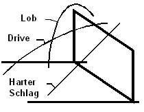

Teil 1:
Die Technik erlernen
Der Angriff - eine Beschreibung
Die physikalischen und biomechanischen Grundlagen
Der Lehrweg zum Angriffsschlag
Die Basis - Dehnen und Kräftigen
Ziel 2 - Der Anlauf, der Absprung, die Landung
Ziel 3 - Die Schlagbewegung im Sprung
Ziel 4 - Die Ballberechnung, das Timing (I)
Ziel 5 - Die Ballberechnung, das Timing (II)
Die Schultern und die Oberarme
Die Brust-, die Rücken- und die Armmuskulatur
Das Durchziehen - der "Lange" Arm
Das Timing - die Ballberechnung
Die Schritte und die Schrittfolge
Der Anlauf, der Armschwung, der Absprung
Das Schlagen mit zunehmender Timinganforderung
Welcher Fehler ist entscheidend?
Welche Einflüsse wirken auf die Spielerinnen?
Wie will ich den Fehler korrigieren?
Wie wirken sich meine Korrekturen aus?
Die Checkliste zur Fehlerkorrektur
Der Angriff bildet den Abschluss einer Spielaktion (mit Ausnahme des Services), oder es wird zumindest versucht zum Angriff zu kommen. Spektakuläre Ballwechsel ergeben sich nur, wenn beide Mannschaften angreifen und verteidigen können. Hohe Ballgeschwindigkeit, kurze Reaktionszeiten oder abwechslungsreiche Kombinationen sind nur einige der Schlagworte um ein "interessantes" Angriffsspiel zu beschreiben, aber es soll dadurch klar werden, dass nur ein hohes Ausmaß an Perfektion und Variabilität den Erfolg sichert.
Die Angreiferinnen ernten den Ruhm nach erfolgreichen Angriffen, die Aufspielerinnen den Ärger nach schlechten Aktionen. Dabei darf man aber nie vergessen, dass die Angreiferinnen zuvor das Service angenommen oder gegnerische Angriffe verteidigt haben. Keine Aufspielerin kann aus schlechten Bällen an der 3m-Linie ideale Aufspiele für spektakuläre Angriffskombinationen hervorzaubern.
Der Angriff - eine Beschreibung
Die physikalischen und biomechanischen Grundlagen
Um den Ball in eine bestimmte Richtung spielen zu können, muß ihn die Hand auf einer bestimmten Strecke in einer bestimmten Entfernung vom Körper treffen. Auf dieser Strecke liegen günstige und weniger günstige Treffpunkte. Der Körper sollte, wenn möglich, im Gleichgewicht bleiben
Eine optimale Vordehnung der für die Bewegung relevanten Muskeln durch die Ausholbewegung ermöglicht eine hohe Endgeschwindigkeit.
Der Beschleunigungsweg sollte geradlinig oder stetig gekrümmt sein, um eine möglichst hohe Geschwindigkeit erreichen zu können.
Die Teilbewegungen müssen aufeinander abgestimmt werden, damit sie sich gegenseitig unterstützen. In Form einer kinematischen Kette werden die Einzelimpulse von Körperteil zu Körperteil übertragen und dabei verstärkt - Peitscheneffekt des Schlagarms.
Jede Bewegung (Aktion) löst eine entgegengesetzte Ausgleichsbewegung (Reaktion) aus, damit der Körper im Gleichgewicht bleibt. Bei der Ausholbewegung zum Angriffsschlag wird der Schlagarm mit der Schulter zurückgenommen, die Beine gehen deshalb leicht nach hinten. Bei der Schlagbewegung kommen auch die Beine wieder nach vorne - auch wichtig für die Landung.
Der Ballflug beginnt mit einem Impuls durch die Schlaghand, der ihn in einem bestimmten Winkel mit einer bestimmten Richtung beschleunigt. Während dem Flug wirken die Schwerkraft und der Luftwiderstand. Je nach Rotation des Balles kann der Luftwiderstand einen unerwarteten Ballflug auslösen (z.B. Flattern).
Der Angriff läßt sich in mehrere Phasen unterteilen:
 Die Vorbereitungsphase
Die Vorbereitungsphase
Die Hauptphase
Die Übergangsphase
Die Spielerin versucht in dieser Phase den Ballkontakt optimal vorzubereiten, um den Ball in möglichst großer Höhe und optimaler Position treffen zu können.
Die Spielerin beginnt aus einer mittelhohen Bereitschaftsstellung knapp hinter der 3m-Linie mit 1-2 Orientierungsschritten. Durch den langen Stemmschritt gelingt es die Geschwindigkeit in Höhe umzusetzen. Die Arme gehen nach hinten oben, dann werden betont die Fersen aufgesetzt, der Körperschwerpunkt bleibt tief und weit hinten. Dadurch wird eine optimale Vorspannung der Sprungmuskulatur erreicht. Der letzte Schritt ist der Beistellschritt leicht vor den Stemmfuß, dabei wird der Fuß etwas eingedreht. Der beidbeinige Absprung wird durch ein Hochschwingen der Arme unterstützt, der Zeitpunkt muss so gewählt werden, dass der Ball im höchsten Punkt des Sprungs getroffen wird.
Das Ziel der Angreiferin ist den Ball so zu treffen, dass die eigene Mannschaft zum Punktgewinn kommt. Wenn das nicht gelingt, so soll der Gegner wenigsten so behindert werden, dass der Gegenangriff wirkungslos bleibt.
Der Schlagarm wird gebeugt und hinter den Kopf geführt, der andere Arm verharrt zur Stabilisierung ungefähr in Kopfhöhe. Der Körper ist in einer leichten Bogenspannung, der Oberkörper durch das Zurücknehmen der Schulter verwrungen.
Die Schlagbewegung wird durch das Absenken des Nichtschlagarms nach vorne eingeleitet. Die Schulter des Schlagarms kommt nach vorne, als nächste der Ellbogen, dann wird der Unterarm gestreckt, inzwischen ist auch der Oberkörper in eine leichte Vorlage gebracht. Die Hand trifft den Ball vor dem Körper und soll in dabei mit betonten Handgelenkseinsatz von hinten oben treffen (überdachen).
Eine lockere und kontrollierte beidbeinige Landung ermöglicht das rasche Weiterspielen. Die Angreiferin schont ihre Gelenke und begibt sich nicht in Gefahr eines Fehlers wie dem Übertreten der Mittellinie oder einer Netzberührung.
Der Angriff kann nach verschiedenen Kriterien untergliedert werden.
Der Absprung
Die Ballberührung
Die Schlagrichtung
Das Tempo des Aufspiels
Die Länge des Aufspiels
Der Anlauf mit 3 Schritten.
Der Standardanlauf, wie er meistens ausgeführt wird.
Rechtshänderinnen beginnen mit einem kurzen Auftakt- oder Orientierungsschritt mit links, es folgt der lange flache, fast gesprungene Stemmschritt, kurz später folgt der Beistellschritt mit links.
Der Anlauf mit 4 Schritten.
Mit 4 Schritten kann die Angreiferin ein höheres Tempo erreichen, dafür benötigt sie aber mehr Zeit und Platz. Deshalb ist dieser Anlauf meist nur nach hohem Zuspiel auf der Außenposition oder aus dem Hinterfeld möglich.
Der Anlauf mit 2 Schritten.
In der Mitte bleibt nach einem Blocksprung oft nur mehr sehr wenig Zeit sich vom Netz zu lösen um wieder zum Schnellangriff anlaufen zu können, deshalb wird der Anlauf auf 2 Schritte verkürzt. Es genügt der Stemmschritt und der Beistellschritt, manchmal bleiben Reste eines Orientierungsschrittes als Auftaktschritt oder -hopser am Stand übrig.
Die Trickanläufe.
Wenn die Aufspielerin vorne ist, gibt es weniger Möglichkeiten den gegnerischen Block durch Kombinationen zu täuschen. Es ist günstig, wenn die Schnellangreiferin mit "sich selbst" kombinieren kann. Das Ziel ist den Block zu täuschen, dafür wird auf die maximal mögliche Sprunghöhe verzichtet.
Besonders elegant ist der "Stopper", die Angreiferin läuft zum Schnellangriff, springt aber nicht ab, der Ball wird etwas höher aufgespielt. Kurz bevor der Block landet, springt die Angreiferin aus dem Stand und kann blockfrei angreifen. Eine weitere Möglichkeit ist der Anlauf "um's Eck" - der erste Schritt zeigt in eine andere Richtung als die weiteren, die Mittelblockerin soll in die falsche Richtung geschickt werden.
Mit einer Landung ungefähr am Absprungort.
Von der Aufspielerin weggesprungen - der "Flieger".
Die Schlagbewegung erinnert beim einbeinigen Absprung stark an den Sprungwurf beim Handball, ähnliche viele individuelle Variationsmöglichkeiten gibt es auch hier.

Der harte Schlag
Der Ball wird vor dem Körper scharf von oben nach unten geschlagen.
Der Driveschlag
Der Ball wird ober dem Kopf meist lang ins Hinterfeld geschlagen.
Der Lob
Auch "technischer Angriff" genannt, der Ball wird locker mit der Handfläche oder dem Handballen kurz über den Block geschlagen.
Die harte Finte
Der Ball wird mit den Finger seitlich am Block vorbei von oben nach unten gedrückt.
Die weiche Finte
Der Ball wird mit den Fingerspitzen über den Block getippt.
Die lange Finte
Der Ball wird mit verstärktem Handgelenkseinsatz lang nach hinten gespielt.
Die Schlagrichtung wird in erster Linie von der Richtung des Anlaufs beeinflusst. Dazu kommen verschiedene Möglichkeiten den Ball bewusst in eine bestimmte Richtung zu schlagen.
Der frontal Schlag (in Anlaufrichtung)
Der Schlag nach dem Ausdrehen
Der Schlag über die Schulter
Der Schlag nach einer Körperdrehung - der Drehschlag
Die Handgelenksschläge (in alle Richtungen)
Statt Tempo wird oft auch der Begriff Welle verwendet.
1. Tempo
Die Angreiferin springt vor oder mit der Ballberührung der Aufspielerin.
2. Tempo
Die Angreiferin startet den Anlauf ungefähr mit der Ballberührung durch die Aufspielerin, diese spielt den Ball ungefähr 1 - 1½m über das Netz.
3. Tempo
Die Angreiferin startet kurz nach der Ballberührung durch die Aufspielerin, bevor der Ball am höchsten Punkt seiner Flugkurve ist, dieser befindet sich ungefähr 2 - 2½m über dem Netz.
4. Tempo
Hoch gespielte Bälle ("russisch"), die Angreiferin startet erst, wenn der Ball am höchsten Punkt ist oder sogar noch später. Der Ball erreicht dabei eine Flughöhe von 2½m über dem Netz oder mehr.
Alle Variationen sind theoretisch möglich (Vergleiche dazu auch das nordamerikanische System.), in Europa haben sich gewisse Standards durchgesetzt, die allgemein üblich und bekannt sind:
Die Bälle relativ zur Aufspielerin.
50cm vor oder hinter der Aufspielerin.
1-1½m vor oder hinter der Aufspielerin.
2-3m vor oder hinter der Aufspielerin.
2½ - 3½m vor (oder hinter) der Aufspielerin.
Die Bälle relativ zum Netz.
Zu den Antennen.
In die Netzmitte.
Vor Beginn des Ballwechsels legt die Aufspielerin die Angriffe fest und zeigt sie den Angreiferinnen an. Diese müssen für ihren Ball anlaufen, egal, wie die Aufspielerin spielt. Erst im absoluten Notfall, nach Zuruf durch die Aufspielerin, darf eine Angreiferin von ihrem vorher festgelegten Anlauf abweichen. Sonst droht das Chaos, besonders wenn Kombinationen gespielt werden sollen!
Dazu kommen noch die Hinterfeldangriffe, Spitzenmannschaften spielen auch hier schon Bälle im 2. Tempo, im Training auch schon im 1. Tempo Die Kubaner haben den Schnellangriff aus dem Hinterfeld nach schlechter Annahme an die 3m-Linie auch schon im Wettkampf gezeigt, allerdings noch als unechten Schnellangriff, also noch nicht als Aufsteiger. Üblich sind Angriffe über die 1, die 6 und die 5, individuell werden auch Positionen dazwischen festgelegt.
Jeder Angriffsvariante ist ein Zeichen zugeordnet, die Fingerstellung leitet sich aus der darzustellenden Nummer ab, bei den Aufspielen nach hinten (über Kopf) werden manchmal einige Finger ausgelassen.
Der Hinterfeldangriff, auch 9er genannt, wird mit Buchstabencodes (A-C oder A-E) zugerufen, mit einem Finger, der auf die Angriffsposition deutet, angezeigt oder auch individuell festgelegt.
Der Angriffsschlag gilt als die koordinativ schwierigste Einzeltechnik des Volleyballs. Der Hauptteil der Handlung erfolgt im Sprung, die Spielerin muß also 2 unterschiedliche Bewegungen, deren Bahnen in Kurven verlaufen, aufeinander abstimmen. Einerseits stehen die Bahnen schon frühzeitig fest, andererseits verhindert das auch späte Korrekturen. Der Angriff "darf" nach dem Beginn des Anlaufs "nicht" mehr geändert werden, jede spätere Korrektur verringert die Abschlaghöhe und damit die Effektivität.
So bleibt nur eines: Üben, üben, üben, ... Je früher eine Spielerin erkennt, wie der Ball fliegt, um so früher ist sie in der Lage ihren Anlauf danach auszurichten und so zum optimalen Handlungsabschluß zu kommen. Nicht nur das Aufspiel ist wichtig, je nach Angriff entscheidet die Annahme mehr oder weniger über Zeitpunkt und Richtung des Anlaufs (vor allem bei Schnellangriffen und Kombinationsbällen).
Die Angreiferin muß den Ballflug beobachten, um ihren Angriffsort vorausbestimmen zu können. Danach muß sie so schnell wie möglich anlaufen, ein- oder beidbeinig abspringen, den Ball treffen, weich und locker landen ohne auslaufen zu können und sofort wieder bereit zum Weiterspielen sein. Dafür benötigen sie vor allem die Orientierungs-, Rhythmus-, Kopplungs- und Gleichgewichtsfähigkeit. Gegen einen guten Block oder bei verstellten Bällen ist auch die Umstellungsfähigkeit wichtig.
Es bleiben noch die Reaktions- und Differenzierungsfähigkeit, die aber für Volleyball ebenso notwendig sind, beispielsweise in der Verteidigung.
Die Übungen werden in Form einer Methodischen Übungsreihe vorgestellt. Der Angriff ist aber viel zu komplex, um innerhalb eines oder weniger Trainings und in einem durch erlernt werden zu können. Je nach Können der Spielerinnen gilt es die einzelnen Übungen oder Übungsreihen für ein Training zusammenzustellen. Aber auch für Könner eignen sich verschiedene vorbereitende Übungen, vor allem für das Aufwärmen.
Alle Übungen, die seitig sind, sind für Rechtshänderinnen beschrieben. Linkshänderinnen müssen, wie sie es wahrscheinlich gewohnt sind, die Angaben für links und rechts vertauschen. Alle Übungen sollen aber auch mit der "schlechteren" Seite versucht werden. Bei Fortgeschrittenen lassen sich durch gezieltes Training der "schlechteren" Seite blockierende und die Leistung limitierende Technikplateaus durchbrechen. Bilateralität ist zumindest teilweise anzustreben, wird aber aus Zeitmangel selten ganz erreicht werden können.
Eigentlich ist es ja ein Vorteil, wenn man Linkshänderin ist. Die meisten Trainer sind froh, wenn wenigstens eine mit der links Hand angreifen kann, da sie so die ideale Besetzung für die Position der Diagonalspielerin darstellt. Ebenso ist die Aufspielerin als Linkshänderin beim Angriff im Vorteil. Auch auf allen anderen Positionen kann eine Linkshänderin den gegnerischen Block vor ungewohnte Probleme stellen.
Der Ball kommt beim Aufspiel von der Position 2 von der "falschen" Seite, die linke Schulter muß beim Ausholen zurückgenommen werden, der Kopf muß aber nach rechts verdreht werden, um den Ball zu sehen. Solange von der 3 aufgespielt wird, tritt dieses Problem nur in geringerem Umfang auf. Aber auch hier haben die 4er, 5er und 6er meist mehr Ballberührungen als die 1er und 2er, da die Hauptangriffsrichtung für Rechtshänderinnen diagonal von links nach rechts ist.
Deshalb muß so schnell wie möglich das Aufspiel über Kopf eingeführt werden, solange das nicht geht, muß der Trainer einspringen und viele 2er aufspielen oder aufwerfen. Das darf aber nur eine kurzfristige Notlösung sein, nicht der Trainer soll üben, sondern die Spielerinnen!
Auch ein frontales Aufspiel, zumindest im Training, ist zum Üben möglich, aber ebenfalls nur eine Notlösung, da die Spielnähe fehlt!
Kinder und teilweise auch noch Jugendliche lernen oft ganzheitlich durch Zuschauen und Nachmachen. Rechtshänderinnen können dabei viel von einander abschauen, Linkshänderinnen haben diese Möglichkeit meist nur sehr eingeschränkt.
Wie schon zuvor erwähnt, hier hilft nur üben, üben, üben, ..., das hat aber noch selten geschadet.
Der Lehrweg zum Angriffsschlag
Die Basis - Dehnen und Kräftigen
Eine gewisse Basis sollte schon vorhanden sein, bevor mit dem Angriff begonnen werden kann. Wer nicht springen kann, wird auch nicht angreifen können. Die wichtigsten Fähigkeiten entwickeln sich während der Ausbildung von selbst, beispielsweise die Sprungkraft. Als Trainer muß man darauf achten, daß die weniger belastetet Muskeln auch trainiert werden, um einseitige Muskelzuwächse und daraus entstehende Dysbalancen zu vermeiden.
Wie in den meisten Sportarten ist die allgemeine Beweglichkeit eine Voraussetzung zur Sportausübung. Verkürzungen erhöhen die Verletzungsanfälligkeit, ungleiche Muskellängen belasten die Gelenke einseitig und führen so zu Abnützungen, die bis zum erzwungenen Abbruch der Sportausübung führen können.
Für Volleyball ist keine spezielle Beweglichkeit, wie für Turnen oder Gymnastik, notwendig. Verkürzungen können aber besonders die Ausholbewegung des Arms und damit den Armzug behindern.
Zum Springen braucht man vor allem die Kraft der Beine, auch zum Landen, vor allem nach schlechten Sprüngen und zur Korrektur von schlechten Bewegungen.
Die Arme braucht man zum Schlagen des Balles, die Technik hat aber eine größere Bedeutung als die Kraft.
Der Körper bildet die Verbindung von Armen und Beinen, erst durch die sogenannte Körperspannung wird eine optimale Durchführung des Angriffs möglich. In diesem Bereich haben Mädchen oft sehr große Mängel, da sie von klein auf nicht werfen lernen.
Am Anfang steht das Schlagen eines Balles im Stand über das Netz.
Ziel 2 - Der Anlauf, der Absprung, die Landung
Parallel dazu erfolgt das Erlernen des richtigen Anlaufs, des optimalen Absprungs und einer weiche und kontrollierten Landung. Die Schrittlänge muß auf die Entfernung zum Absprungort abgestimmt werden können.
Ziel 3 - Die Schlagbewegung im Sprung
Die beiden vorherigen Ziele werden nun kombiniert. Am Ende steht das Schlagen eines Gehaltenen Balls über das Netz.
Ziel 4 - Die Ballberechnung, das Timing (I)
Es gilt den Start und die Richtung des Anlaufs auf den aufgeworfenen Ball abzustimmen. Erlernt wird das Schlagen von aufgeworfenen Bällen über das Netz.
Ziel 5 - Die Ballberechnung, das Timing (II)
Nun muß noch der Anlauf mit der Annahme oder der Verteidigung abgestimmt werden. Erlernt wird das Schlagen von aufgespielten Bällen. Mit dem Übergang zum Ziel 5 endet diese Einleitung zum Angriffsschlag.

Die vorbereitenden Übungen schulen einzelne Elemente des Angriffs und schaffen die körperlichen Voraussetzungen zur Durchführung des Angriffs.
Eine gute allgemeine Beweglichkeit ist anzustreben, allerdings ist für Volleyball keine außergewöhnliche Gelenkigkeit notwendig. Heute haben aber schon viele Kinder solche Verkürzungen, daß regelmäßiges Dehnen unbedingt notwendig ist. Wie schon erwähnt, erhöhen Verkürzungen die Verletzungsanfälligkeit, ungleiche Muskellängen belasten die Gelenke einseitig und führen zu Abnützungen, die bis zum erzwungenen Abbruch der Sportausübung führen können.
Die Schultern und die Oberarme
Der Schulterbereich und die Rückseite des Oberarm müssen ausreichend gedehnt werden, da sonst eine korrekte Ausholbewegung nicht möglich ist. Verkürzungen im Schulterbereich oder im Oberarm verhindern eine korrekte Schlagbewegung und können zu Schäden im Schultergelenk führen.
Eine Verkürzung der Brustmuskulatur kann den Armschwung während des Anlaufs behindern, ein unkorrekter Armschwung verhindert einen koordinierten Absprung, die Sprunghöhe wird geringer, die Schlagbewegung meist übertrieben hektisch.
Im Volleyball werden keine besonderen Anforderungen an die Kraft gestellt, wichtiger ist die Sprungkraft und die Schnelligkeit. Zusätzlich hat die Ausdauer eine gewisse Bedeutung, weniger wegen der Länge der Belastungen als vielmehr wegen der besseren Regenerationsfähigkeit in den vielen kurzen Spielunterbrechungen.
Die Beinstrecker und die Wadenmuskulatur leisten die Hauptarbeit beim Absprung. Deshalb sollen sie von Anfang an trainiert werden, vor allem müssen sie "schnell" gemacht werden.
Die Rumpf-, und besonders die Bauchmuskulatur erzeugen die nötige Körperspannung bei der Schlagbewegung. Nur wenn es gelingt, die Bewegung der Arme und Beine durch die Rumpfmuskulatur zu verbinden, ist ein koordinierter Angriffsschlag möglich.
Die Brust-, die Rücken- und die Armmuskulatur
Die Brust-, Rücken- und Armmuskulatur führt die Schlagbewegung des Armes aus, hierbei ist vor allem auf die Koordination, Schnelligkeit und Genauigkeit der Bewegungsausführung zu achten, weniger auf die Kraft.
Das Ziel ist die Verbesserung der Schnelligkeit und der Koordination, weniger die der Kraft, das bedeutet, daß die meisten Übungen schnell ("explosiv") ausgeführt werden müssen.
Verschiedene Lauf- und Sprungübungen, z. B. im Sprunggarten oder mit Ringen.
Alle Halte- und Bewegungsübungen der Rumpfmuskulatur, die die Körperspannung verbessern.
Geschicklichkeitsübungen - z. B. Jonglieren von einem und mehreren Bällen, Prellen des Volleyballs kombiniert mit verschiedenen Bewegungsaufgaben.
Für die Arme empfehlen sich Übungen mit elastischen Bändern, diese sollten aber nur von Fortgeschrittenen schnell durchgeführt werden. Die Arme werden in verschiedene Richtungen gegen den Widerstand des Bandes bewegt.
Die Teilelemente der komplexen Technik werden einzeln vorbereitet, dazu kommt eine umfangreiche(!) koordinative Ausbildung. Den Angriff unter idealen Bedingungen könnte man zwar etwas schneller Erlernen, aber ohne ausreichende Variationsmöglichkeiten durch die Spielerin und mit wenig Stabilität unter Streß. Schlecht aufgespielte Bälle müssen ebenfalls geschlagen werden können, was aber nur gelingt, wenn das auch von Anfang an, also auch in den Vorübungen, variabel gelernt wird.
Die Schlagbewegung wird vor allem durch verschiedene Würfe vorbereitet, zusätzlich und als gute Voraussetzung soll man spätestens in dieser Phase das Service von oben lernen.
Auch wenn der Anfängerin noch nicht klar sein kann, warum der Wurf mit hohem Ellbogen oder in der richtigen Schrittstellung ausgeführt werden muß, so hat der Trainer darauf besonders zu achten. Damit vermeidet man spätere Probleme beim eigentlichen Lernen der Technikteile.
Das Durchziehen - der "Lange" Arm
"Durchziehen" heißt, daß der Arm nach der Ballberührung durchschwingt, dadurch wird eine etwas größere Schlaghärte erreicht, aber auf einige Zentimeter Abschlaghöhe verzichtet. Die Schlaghärte wird vor allem durch Kraft erreicht.
Der Schlag mit dem "langen" Arm nützt den Peitscheneffekt. Sobald die Schulter und der Ellbogen in der optimalen Position sind, werden sie abgebremst. Es bewegen sich "nur" noch die weiter außen gelegenen Teile des Arms. Schlußendlich ist die gesamte Bewegungsenergie in der Hand konzentriert. Je lockerer das Handgelenk beim Treffen des Balls bleibt, um so schneller klappt die Hand nach vorne und um so schneller wird der Ball. Die Schlaghärte wird vor allem durch Technik erreicht.
Die Würfe erfolgen mit und ohne Bezug zum Netz und zum Feld und in immer neuen Variationen, mit und ohne Partner, oder in Kleingruppen mit Nachlaufen. Es gilt einzelne Technikelemente in spielerischer Form vorzubereiten und dabei auch andere Komponenten des Spiels, wie Laufen am Feld und zum Netz und die Bewegung zum Ball, oder Annahme, Verteidigung und Aufspiel vorzubereiten und zu üben.
Paarweise zum Partner oder einzeln gegen die Wand, den Ball fangen. Beim Ausholen in die Knie gehen, aber nicht zu weit ins Kreuz fallen (tut weh, fördert später das "Unterlaufen"), auf Körperspannung (Arbeit der Bauchmuskeln, kein Hüftknick vor dem Wurf) achten.
Wie zuvor, aber die Arme in Schlagstellung stehen lassen - Vorbereitung für den Langen Arm.
Wie zuvor, aber den Ball am Boden aufsetzen. Den Ball mit Unterem Zuspiel annehmen und fangen.
Wie zuvor, aber die Arme in Schlagstellung stehen lassen.
Beim beidarmigen Wurf über Kopf ist der Ellbogen, wenn er beim Abwurf gestreckt ist, immer hoch, da beide Arme den Ball halten. Beim einarmigen Wurf kann der Arm zur Seite ausweichen, was aber strikt zu vermeiden ist!
Ähnlich dem beidarmigen Wurf, aber in deutlicher Schrittstellung, der diagonale Fuß ist vorne - auf gerade Fußstellung, auch beim hinteren Fuß achten. Die Nichtschlaghand leitet durch Absenken nach vorne (nicht nach außen - falsche Drehung der Hüfte!) die Bewegung ein. Nicht zuviel die Hüfte drehen und den Ellbogen hoch zurück und nach vorne führen.
Wie zuvor, aber den Schlagarm in Schlagstellung stehen lassen - Vorbereitung für den Langen Arm.
Wie zuvor, aber den Ball am Boden aufsetzen. Den Ball mit Unterem Zuspiel annehmen und fangen.
Wie zuvor, aber den Schlagarm in Schlagstellung stehen lassen.
Mit einer Hand fangen und sofort wieder werfen.
Würfe auf Ziele (Matten) oder durch abgegrenzte Bereiche (Antennen, Ringe, ...).
Alle einarmigen Würfe auch mit der Nichtschlaghand ausführen.
Das Service von oben ist die einfachste Form einen Ball oberhalb des Kopfs zu schlagen. Der Treffpunkt des Balls ist wie beim Driveschlag knapp vor und über dem Kopf. Die Spielerin soll den Ball schon aus dem Augenwinkel sehen können.
Zur Technik des Service siehe Anhang.
Service gegen die Wand und fangen (ev. auch mit Annahme).
Von der 3m-Linie über das Netz.
Die Partnerin fängt den Ball oder nimmt mit Unterem Zuspiel an.
Langsam die Entfernung zum Netz erhöhen - diese Übung kann auch gut mit Annahme- und Bewegungsübungen kombiniert werden.
Diese Übungen bereiten den Handgelenkseinsatz für die Handgelenksschläge vor, um auch zu nah ans Netz gespielte Bälle neben dem Block vorbei schlagen zu können.
Den Ball gerade gegen die Wand in ein Zielfeld werfen, durch Handgelenkseinsatz dem Ball eine seitliche Rotation geben, wodurch er nach rechts oder links abprallen soll.
Auch mit der schwächeren Hand versuchen.
Das Timing - die Ballberechnung
Beim Schlag können wenige Zentimeter über Erfolg oder Mißerfolg entscheiden. Deshalb ist es notwendig den Ball am höchsten Punkt des Sprungs zu treffen.
Beim Einlaufen den Ball hochwerfen und im Sprung (einbeinig, beidbeinig, nach korrektem Anlauf) so hoch wie möglich fangen.
Den Ball Richtung Netz werfen und fangen, zuerst nach Anlauf im Stand, dann im Sprung nach korrektem und seitenverkehrtem Anlauf.
Paarweise den Ball zuwerfen und im Sprung mit langen Armen fangen.
Wie zuvor, aber noch im Sprung zurückwerfen.
Im Sprung eine ½ Drehung machen und Wurf über Kopf oder indirekt zwischen den Beinen durch ausführen - in beide Richtungen drehen.
Den Ball mit einer Hand fangen, übergeben und mit der anderen Hand werfen.
Wie zuvor, aber im Sprung.
Im Sprung hin- und her pritschen, für sprungstarke Spielerinnen auch mit Doppelpritscher.
Die Schritte und die Schrittfolge
Verschiedenste Lauf- und Sprungkombinationen üben um das bewußte Laufen und Aufsetzen der Füße zu erlernen. Die Schrittfolge des Anlaufs und verschiedene Vorstufen können immer wieder in Laufübungen eingebaut werden, vor allem beim Aufwärmen.
Einbeiniger Sprung, beidbeinige Landung und umgekehrt nach vorne, nach hinten und zur Seite. Anfänger nicht weit zur Seite springen lassen, da die Gefahr des Umknickens bei der Landung noch zu groß ist, solange die Muskulatur noch schwach ist.
Ein- und beidbeinige Sprünge in verschiedenen Richtungen, auch mit Richtungsänderungen und Drehungen.
Der beidarmige Armschwung widerspricht dem "normalen" diagonalen Arm- und Beinbewegungen beim Laufen und muß deshalb bewußt geübt werden. Ein schlechter Armschwung ist oft die Ursache für eine hektische Schlagbewegung bei geringe Sprunghöhe.
Der Armschwung beim Absprung endet auf Kopfhöhe (Scheitel). Ein Überstrecken läßt die Angreiferin ins Kreuz fallen und begünstigt das Unterlaufen und ein zu spätes Beginnen der Schlagbewegung.
Im Stehen mit Unterstützung durch die Knie mit beiden Armen durchschwingen.
Wie zuvor, mit kleinen Sprüngen.
Wie zuvor, dabei abwechselnd das Gewicht auf die Fersen (Stemmschritt) und die Ballen (Absprung) bringen.
Wie zuvor, aber mit dem Absprung kombinieren - locker landen und mehrmals bewußt nachfedern.
Am wichtigsten bei der Absprungphase ist das beidbeinige Stemmen über die Ferse. Im Volleyball soll sie zwar "selten bis gar nicht" den Boden berühren, aber die letzen beiden Bodenkontakte vor dem Absprung beginnen mit der Ferse. Dadurch gelingt es die Geschwindigkeit der Vorwärtsbewegung optimal in Sprunghöhe umzusetzen.
Das optimale Zusammenspiel von 3 verschiedenen Komponenten ergibt eine maximale Sprunghöhe: An erster Stelle steht die Muskelkraft, die durch die willkürliche Kontraktion der Muskeln in den Beinen entsteht. Dazu kommt ein Vorspannung der elastischen Anteile, und eine zusätzliche Kontraktion durch den Muskelspindelreflex, besonders wirksam bei einem möglichst schnellen Absprung und einer daraus resultierenden kurzen Bodenkontaktzeit.
Bewußtes Laufen und gehen - Abrollen, am Ballen, auf der Ferse, auf den Fußkanten, ...
Laufen und Springen mit bewußt kurzer Bodenkontaktzeit (einseitig und auch beidseitig) - reaktives Sprungkrafttraining.
Diverse Lauf- und Sprungkombinationen, mehr oder weniger regelmäßig links und rechts.
Verschiedenen Sprungkombinationen, z. B. über Bänke oder durch aufgelegte Ringe.
Beidbeiniger Strecksprung mit ¼ Drehung nach rechts oder links, lockere Landung beidbeinig.
Sprünge mit einbeinigem Absprung und beidbeiniger Landung.
Sprünge auch nach Anlauf und mit stärkerer Drehung, bis 1½ Drehungen sollte es einigen gelingen.
Alle Sprünge auch mit angelegten Armen versuchen.
Von Anfang an sollte auf eine gerade, beidbeinige und vor allem lockere Landung geachtet werden. Das schont vor allem die Gelenke der Spielerinnen. Dazu sichert sie die Bereitschaft zum Weiterspielen und hilft Fehler durch Übertreten zu vermeiden, die entstehen können, wenn die Spielerinnen sich zur Seite drehen.
Bewußtes, mehrmaliges Nachfedern nach der Landung.
Die Spielerinnen müssen bei den verschiedenen Sprungübungen immer wieder an die weiche Landung erinnert werden, da sie meist erst nach dem Hauptteil der Aktion kommt und deshalb die Konzentration darauf nicht vorhanden ist.
Es gibt viele Möglichkeiten die verschiedenen Vorbereitenden Übungen in komplexe Übungen und Übungsreihen einzubauen. Dabei ist darauf zu achten, daß die Technik nicht unter einer zu großen Fülle der Aufgaben leidet. Zur Festigung unter variablen Bedingungen sind komplexe Übungen gut geeignet, wenn sie genügend Ballberührungen und damit Wiederholungen ermöglichen.
Service - Annahme - Fangen mit Nachlaufen.
In weiterer Folge kann diese Übung bis zu einer kompletten K1-Übungsreihe ausgebaut werden.
Ball über die Schnur miteinander, aber das Fangen und Werfen wird an die verschiedenen Techniken des Volleyballspiels angelehnt. Der 1. Ball wird vor dem Körper unter Schulterhöhe mit gestrecktem langem Arm gefangen und mit möglichst wenig Armeinsatz (Knieeinsatz) zur Aufspielerin geworfen. Die Aufspielerin fängt über Kopf, tippt den Ball an die Stirn und stößt den Ball zur Angreiferin, diese fängt beidarmig über Kopf, holt aus und wirft über Kopf (später auch einarmig).
Viele Übungen zur Verbesserung der Koordination lassen sich in der Einleitung des Trainings gut unterbringen. Einige der Übungen sind sehr allgemein, wie verschiedene Laufübungen, andere sind recht speziell, wie die Übung zum Armschwung. Spezielle Übungen gilt es immer wieder einzustreuen, die vorgestellten sollen dazu Anregungen liefern.
Verschiedenen Elemente der Technik werden einzeln und in Kombination gelernt und geübt. Die Komplexität der Übungen nimmt zu, bei den meisten erkennt man schon die direkte Verwandtschaft mit den Zielübungen.
Das Netz wird je nach Wurfkönnen und -erfahrung auf Schulter- bis Kopfhöhe abgesenkt, entweder wird es schräg gespannt oder man läßt es durchhängen, damit sich jede die für sie optimale Netzhöhe suchen kann.
Der Trainer soll die Spielerinnen bei der Suche nach der richtigen Höhe unterstützen, manche bleiben auch aus anderen Gründen an falschen Stellen (neben der Freundin, zu feig, um in die Netzmitte zu gehen, beim zweiten oder dritten Mal zu faul um wieder an den richtigen Platz zu gehen, usw.).
Ungefähr 5m vom Netz den Ball zur Partnerin schlagen, dabei den Balltreffpunkt bewußt ändern.
Hinten unten: Der Ball fliegt im Hohen Bogen über das Netz.
Hinten oben: Der Ball trifft die Mittellinie.
Oben: Den Ball so vor dem Netz aufsetzen, daß er im hohen Boden darüber hinweg zur Partnerin fliegt.
Vorne oben (eine Spaßübung): Umdrehen und versuchen, den Ball zwischen den Beinen durch indirekt zur Partnerin zu schlagen. Wer bringt den Ball über das Netz?
Der Arm bleibt immer gestreckt, deshalb muß der Ball mehr oder weniger weit vor dem Kopf und Körper getroffen werden. Das zu lernen ist wichtig, damit später nicht jeder Ball unterlaufen wird.
Am Netz stehend, die Entfernung ist etwas über Armlänge, den Ball mit der gestreckten linken Hand halten und (fast) ohne Aufwurf von oben nach unten über das Netz schlagen. Durchziehen und mit langem Arm schlagen.
Wie zuvor mit dem Treffpunkt des Balles spielen.
Langsam die Höhe des Aufwurfs steigern. Darauf achten, daß die Spielerinnen nicht fehlerhaft werden.
Eine schlechte Fußstellung führt meist zu einem falschen Verdrehen der Hüfte. Oft verursacht schon ein leicht verdrehter Fuß eine starke Verdrehung, manchmal, wenn auch selten, stimmt die Bewegung auch, obwohl beide Füße total verdreht sind.
Wenn das Netz zu hoch ist, wird der Ball gern "unterlaufen" und dadurch über, statt vor dem Kopf bzw. Körper geschlagen.
Der Schlagarm muß gestreckt sein, je mehr er gebeugt wird, um so mehr wird meist auch die Hüfte gedreht.
Tip an die Spielerinnen: "Später muß der Schlag über das Netz oder sogar über den Block gelingen."
Die Schulter muß vor dem Schlag nach vorne geführt werden - nicht über die Schulter schlagen, das wird erst später gelernt, wenn der frontale Schlag sitzt.
Langsam die Netzhöhe steigern, dabei wie zuvor auf korrekte Technik achten. Im Zweifel das Netz nieder lassen.
Mit Durchziehen und mit langem Arm üben.
Auch mit Aufwurf durch eine Mitspielerin üben - das Timing wird schwieriger, da sich die Angreiferin jetzt mit einer Mitspielerin und dem Ballflug anstimmen muß.
"Schlagfangen" nach unterschiedlichen Aufwürfen (auch von Mitspielerinnen) mit Eigenkontrolle der Armstellung.
Ist der Treffpunkt des Balls weit genug vor dem Körper?
Ist der Schlagarm gestreckt?
"Squash", paarweise, abwechselnd indirekt gegen die Mauer schlagen, auch als Spiel möglich.
Beim indirekten Schlagen gegen die Mauer ist darauf zu achten, daß nicht "gekurbelt" wird, vor allem, wenn eine Spielerin alleine spielt. Entweder muß sie den Ball nach wenigen Wiederholungen (2-3) abfangen, oder sie läßt den Ball vor dem Schlag einmal auffallen.
Ungefähr 2 bis 3m vom Netz entfernt beginnen, der rechte Fuß ist vorne, den Ball mit der rechten Hand leicht nach vorne oben aufwerfen, ein Schritt mit dem linken Fuß. Mit der linken Hand auf den Ball zielen, mit der rechten Hand den Ball als Angriff im Stand (deutliche Schrittstellung zur Verhinderung einer Hüftrotation) über das Netz schlagen. Diese Übung am niederen Netz durchführen und eher nach unten schlagen lassen, damit die Spielerinnen nicht zu sehr "unterlaufen".
Ähnlich wie zuvor, nun aber 3 bis 4m vom Netz beginnen und 3 Schritte machen.
Alle Übungen auch mit der "schlechten" Hand durchführen.
Der Anlauf, der Armschwung, der Absprung
Der Standardanlauf besteht aus 3 Schritten:
Orientierungsschritt
Stemmschritt
Beistellschritt
Für Mittelangreiferinnen bleibt manchmal nur die Zeit für 2 Schritte (Stemmschritt und Beistellschritt), auf der Außenposition oder im Hinterfeld werden auch 4 Schritte verwendet, so kann ein höheres Tempo erreicht werden.
Die Rechtshänderin beginnt mit dem linken Fuß, einem kurzen Orientierungsschritt zur Einleitung, er legt die Anlaufrichtung fest, sie wird danach normalerweise nicht mehr geändert. Es folgt der lange Stemmschritt mit dem rechten Fuß, er wird in Anlaufrichtung aufgesetzt. Der linke Fuß wird kurz danach etwas weiter vorne und leicht eingedreht dazugestellt, das ist der Beistellschritt. Je bewußter die Füße über die Ferse aufgesetzt werden, um so mehr Geschwindigkeit kann in Sprunghöhe umgesetzt werden.
Der Mensch bewegt sich im Kreuzgang, normalerweise schwingen der linke Arm und das rechte Bein gemeinsam nach vorne und umgekehrt. Auch wenn beim Armschwung die Arme parallel geführt werden, so ist doch immer ein Arm dominat, und zwar der Arm, der diagonal zum Spielbein ist. Aus dieser Überlegung wird auch klar, warum der Armschwung vor allem ab dem Stemmschritt so wichtig ist, da er eine starke, den Absprung unterstützende Wirkung haben kann.
Die Arme unterstützen den Anlauf und den Absprung, sie bleiben locker und ziemlich gestreckt und beginnen in Vorhalte, nach dem ersten Schritt schwingen sie knapp neben dem Körper so weit wie möglich zurück, nach dem Beistellschritt wieder knapp neben dem Körper nach vorne oben bis auf Kopfhöhe (Scheitel), und ziehen den Körper beim Absprung hinauf.
In der Luft sollen die beiden Handflächen nach rechts gedreht werden (der linke Daumen ist oben, der rechte unten, siehe auch Schlagbewegung). Dadurch wird das Zurücknehmen der rechten Schulter (Verwringung des Oberkörpers) unterstützt.
Anlaufen mit 2 Schritten und abspringen
Anlaufen mit 3 Schritten und abspringen
Anlaufen nach Rückwärtsbewegung - Lösen vom Netz.
Anlaufen und springen, dabei verschiedenen Figuren in der Luft machen: Drehungen, Spaßfiguren, usw.
Mit solchen Übungen soll schon früh begonnen werden, sie können aber auch noch bei Fortgeschrittenen gegen Ende des Aufwärmens eingesetzt werden. Die Spielerinnen sollen beim Schlagen des Balles nicht mehr an den Anlauf denken müssen, darunter leidet vor allem die Bewegung der Nichtschlaghand.
Ein beidarmiger Anwurf, dann die komplette Armbewegung mit 2-maligem in die Knie gehen und schließlich der Schlag aus dem Stand (schwierig, deshalb zuerst ohne Ball üben!).
Wie schon erwähnt, ist immer wieder auf eine weiche Landung zu achten, die Spielerinnen sind daran zu erinnern. Gerade "schwächere" Spielerinnen, die sich sehr auf den Hauptteil der Aktion konzentrieren müssen, "vergessen" gerne auf eine lockere Landung.
Die Schlagbewegung sollte im Stand schon einigermaßen gelingen, der Anlauf ebenfalls. Nun gilt es diese Teile miteinander zu kombinieren. Kurz vor dem Erreichen des höchsten Punktes im Sprung, beginnt die eigentliche Schlagbewegung. Sie soll so durchgeführt werden, daß der Ball im Moment des Stillstands so hoch wie möglich getroffen wird.
Anlauf, Absprung, Schlag ohne Ball
Mit einem Tennisball
Beide Hände beginnen vorne, den Ball von links nach rechts übergeben, den erster Schritt machen, die Arme zurückführen, den Ball von rechts nach links übergeben, den Stemm- und Beistellschritt machen, Armschwung und Absprung, ganz oben den Ball von links nach rechts übergeben.
Wie zuvor, aber mit einer kompletter Schlagbewegung den Tennisball von oben nach unten über das Netz zu Boden werfen, mit Durchziehen und mit langem Arm üben.
Mit 2 Tennisbällen, einer in jeder Hand.
Einen kompletten Anlauf und Absprung ausführen, einen Ball mit der linken Hand über das Netz legen (als Einleitung der Schlagbewegung), die rechte Hand führt wie zuvor eine komplette Schlagbewegung durch. Mit Durchziehen und mit langem Arm üben.
Dabei ist wichtig, daß die Bälle nacheinander geworfen werden, viele Spielerinnen haben dabei Koordinationsprobleme, weil sie nicht gewohnt sind an die linke Hand zu denken. Einerseits ist sie sowieso die "schlechtere" Hand, andererseits ist in dieser Situation die rechte die Hand die "wichtigere" Hand.
Überforderte Spielerinnen beginnen oft mit der korrekten Ausholbewegung, werfen dann aber beide Bälle mehr oder weniger gleichzeitig über das Netz - das ist keine Schlagbewegung, sondern eher mit einem beidhändiges "Ball über das Netz werfen" zu vergleichen. Wenn nicht korrigiert wird, schieben sie auch später in Streßsituationen den Ball beidhändig über das Netz - geführter Ball - technischer Fehler - Punktverlust ...
Wie schon bei den Vorbereitenden Übungen soll man mit Übungsreihen den Schwierigkeitsgrad langsam erhöhen und eine spielerische und abwechslungsreiche Annäherung an die Schlagbewegung suchen. Die zunehmende Komplexität der Übungen ermöglicht mehr und mehr das Training in spielnahen Situationen.
Schlag - Verteidigung
Paarweise, 10 Schläge im Stand nach Aufwurf, Verteidigung, Fangen, je 3 Serien.
Finte - Verteidigung
Ähnlich wie zuvor, aber 10 kurze Finten mit langem und gestrecktem Arm. Die Verteidigerin soll sich am Arm orientieren können, um später ihre Vorbereitung zur Verteidigung danach ausrichten zu können.
Schlag/Finte - Verteidigung
Paarweise, 10-15 Schläge oder Finten nach Aufwurf, Verteidigung, Fangen, je 3 Serien. Die Verteidigerin soll an der Armstellung die Absicht der Angreiferin erkennen und so rechtzeitig reagieren können - Wahl des Ortes der Verteidigungshandlung.
Wie zuvor, aber in Kleingruppen und mit Nachlaufen, statt Fangen 2-3 Zwischenspiele am Netz, dann angreifen (Bsp.: Unteres Zuspiel - Oberes Zuspiel - Angriff).
Ball über die Schnur miteinander, aus dem Werfen wird nun ein Fangen, Aufwerfen und Spielen, in der Annahme und Verteidigung wird der Ball, wenn möglich, direkt gespielt.
Die einzelnen Technikteile werden zu einem Ganzen zusammengefügt und in immer komplexeren Zusammenhängen geübt und gefestigt. Durch zunehmende Variationen wird die Angreiferin zu einer kompletten Spielerin, zumindest zu einer kompletten Angreiferin.
Sobald man das Gefühl hat, das einige Spielerinnen soweit sind, läßt man die Tennisbälle weg und beginnt mit der ersten Zielübung, dem Schlagen des gehaltenen Balles. Auch die, die noch nicht so weit sind, lernen meistens schnell durch Zuschauen. Je kleiner anfangs das Problem des Timings gehalten wird, um so schneller gelingt es den Spielerinnen den Ball hoch abzuschlagen. Nach und nach erschwert man das Timing durch immer höheres Aufwerfen, in weiterer Folge durch Aufspiel.
Beim Aufwerfen und Halten der Bälle müssen Linkshänderinnen vor allem am Anfang den Ball von der linken Seite bekommen, damit sie es leichter haben. Beim Ausholen müssen sie die linke Schulter zurücknehmen, dabei ist es schwierig nach rechts zum Ball zu schauen.
Das Schlagen mit zunehmender Timinganforderung
Der Schlag des Gehaltenen Balls.
Durch den Wegfall der Ballberechnung können sich die Spielerinnen besser auf eine korrekte Ausführung der Schlagbewegung konzentrieren. Nicht nur wegen der unterschiedlichen Bewegungen der Arme bleiben noch immer genügend Fehlermöglichkeiten, die es zu korrigieren gilt.
1er aufwerfen.
Der Schnellangriff ist der einfachste Angriff für die Angreiferin. Solange der Ball vom Trainer einigermaßen genau aufgeworfen wird, bleibt das Problem der Ballberechnung gering und der Schlag wird auch Anfängerinnen bald gelingen.
5er aufwerfen.
Durch einen genauen und regelmäßige Aufwurf kann der Start des Anlaufs leichter bestimmt werden, er erfolgt mit dem Beginn des Aufwurfs. Leichte Korrekturen im Anlauf werden jetzt notwendig und fordern so die Angreiferinnen zusätzlich.
5er hinten aufwerfen.
Der Ball kommt von der anderen Seite. Dadurch wird das genaue Beobachten der Ballkurve schwieriger. Alle Angreiferinnen, die sich bisher beim Anlauf zu sehr zur Aufspielerin verdreht haben (Beinstellung, Hüfte), werden nun Probleme haben, meist lösen sich die aber nach einer kurzen Besprechung durch den Aufwurf von der anderen Seite wie von selbst.
5er und 5er hinten gegenseitig aufwerfen
Alle Spielerinnen sollen aufwerfen und aufspielen lernen (vor allem 5er, später auch 0er und 2er), dem Trainer bleibt die Zeit zum Beobachten und Korrigieren. Wenn an 3 Positionen aufgeworfen und angegriffen wird, haben die Spielerinnen fast 3mal mehr Ballkontakte, als wenn der Trainer aufwirft, da macht es auch weniger, wenn immer wieder ein Aufwurf daneben geht (und auch dem besten Trainer mißlingt manchmal ein Aufwurf). Die Spielerinnen lernen auch durch das Aufwerfen und dem Beobachten der anderen Angreiferinnen und bekommen vielleicht auch mehr Respekt vor der Aufspielerin.
Die Bälle selbst aufwerfen.
Den Ball selbst hoch aufwerfen, dann erst mit dem Anlauf beginnen. Diese Übung ist der erste Schritt zur Beherrschung eines weniger genauen Ballanflugs.
Wie schon die vorherige Übung ermöglicht diese den Spielerinnen viele Ballkontakte, dabei ist allerdings eine ständiges Ausbessern durch den Trainer notwendig, damit nicht falsche Bewegungen automatisiert werden, wichtig ist eine deutliche Trennung von Aufwurf und Anlauf, sonst leidet der Armschwung.
1er aufspielen.
Die nächste Angreiferin spielt den Ball zur Aufspielerin, die Angreiferin kann sich besser auf den Anlauf und dabei vor allem auf den Armschwung konzentrieren.
5er aufspielen.
Manchmal ist diese Übung vorzuziehen, da manche Probleme mit dem schnellen Loslaufen haben, die Aufspielerinnen tun sich ebenfalls meist mit dem 5er leichter. Dieses Problem stellt sich aber nur, wenn nicht von Anfang an der "Schnellangriff" geübt wird.
5er hinten (aufwerfen und aufspielen).
Wie schon beim Aufwerfen soll der Ball immer wieder von der anderen Seite kommen, so korrigieren sich übertriebene Verdrehungen beim Absprung wie von selbst.
Der Ball kommt für Rechtshänderinnen von der "falschen" Seite, ihnen geht es jetzt so wie den Linkshänderinnen beim 5er vorne. Manche tun sich dabei aber auch leichter, da sie zu einem korrekten Anlauf gezwungen werden.
0er.
Der 0er ist für die Angreiferinnen schon um einiges schwieriger. Die Streuung des Aufspiels nimmt durch den langen Ballweg zu, außerdem fällt der Ball schon relativ schnell nach unten und ist deshalb schwieriger zu berechnen und zu treffen.
2er.
Beim 2er gilt ähnliches wie beim 0er, allerdings ist die Flugkurve des Balls meist kürzer und niedriger. Dafür kommt der Ball für die Rechtshänderinnen wieder von der schlechteren Seite.
0er und 2er abwechselnd.
Diese Übung bringt, wenn sie in rascher Folge ausgeführt wird, ebenfalls recht viele Ballkontakte für die Angreiferinnen, dazu ist sie ein Streßtraining für die Aufspielerin. Entweder wechselt man die Aufspielerinnen, oder der Trainer wirft zwischendurch auf.
Weiterführende Übungen finden sich in großer Menge in verschiedenen Übungssammlungen. Wer als Trainer mit seiner Mannschaft bis hierher gekommen ist, ist sicher auch in der Lage daraus auszuwählen um mit seiner Mannschaft seine Ziele zu erreichen.
Wichtig ist, daß man sich als Trainer bei der Übungsauswahl überlegt, was man erreichen will und warum. Immer trainiert man vieles andere mit, manchmal überwiegt dann auch eine anderer Schwerpunkt als der geplante. Aus "Fehlern" kann man aber lernen, wenn man sich darüber Gedanken macht, und Training schadet selten.
Welcher Fehler ist entscheidend?
Den Fehler suchen, der das Gelingen der Übung verhindert und zu korrigieren versuchen. In größeren Gruppen kann das schwierig werden, manchmal bleibt einem auch nichts anderes übrig als weiterzugehen, obwohl manche noch nicht so weit sind.
Durch Abschauen von den Anderen und durch individuelle Zusatzaufgaben können solche Fehler meistens auch später noch korrigiert werden.
Steht die Plazierung der Mannschaft im Vordergrund oder habe ich genügend Zeit für die Ausbildung der Spielerinnen. Die Zeit für die Ausbildung sollte eigentlich immer da sein, sonst drohen später unüberwindbare Technikplateaus!
Welche Einflüsse wirken auf die Spielerinnen?
Neben dem Training gibt es oft noch viele Einflüsse, die auf die Spielerinnen einwirken. In der Schule, am Beachplatz oder in verschiedenen Hobbygruppen wird Volleyball meist mit anderen Zielsetzungen und damit mit anderen Anforderungen an die Spielerinnen gespielt. Hier bleibt einem manchmal nichts anderes als an die Vernunft der Spielerinnen zu appellieren, manche wollen sich aber auch nicht helfen lassen.
Wie will ich den Fehler korrigieren?
Für jeden Fehler gibt es ein Rezept, oder so ähnlich. Wer das hat, soll es mir bitte mitteilen.
Ich glaube, daß einzelne Teile immer wieder unter erleichterten Bedingungen geübt werden müssen. Viele Wiederholungen sind der Schlüssel zum Erfolg. Wenn die Anforderungen zu hoch sind, bricht eine komplexe Bewegung zusammen, falsche Bewegungsteile werden automatisiert und sind später nur mehr schwierig zu korrigieren.
Zu wenige Korrekturen verhindern einen raschen Fortschritt, zu viele können das Selbstvertrauen untergraben. Wenn man die Bedingungen immer wieder erleichtert und zu jeder Übung eine oder mehrere Bewegungsaufgabe stellt, kann man Element für Element schulen und verbessern. Je "zwingender" eine Situation ist, und trotzdem noch spielerisch bleibt, um so besser.
Wie wirken sich meine Korrekturen aus?
Tritt der Fehler weiterhin häufig auf oder wird es langsam besser, war es meine Übung oder was hat die Veränderung bewirkt. Man soll auch immer beobachten, ob eine bestimmte Übung etwas ganz anderes bewirkt, oder ob nun ein neuer Fehler auftritt. Im Lauf von vielen Trainings bekommt man langsam ein Gefühl für die richtigen Korrekturmaßnahmen.
Christmann, E./Krispin, G.: Technik des Volleyballspiels. In: Christmann, E./Fago, K./DVV: Volleyball Handbuch, Reinbek bei Hamburg 1993, 331-380
Dannenmann, F.: Spielformen zur gezielten Förderung volleyballspezifischer Bewegungsformen. In: Dannenmann, F. (Hrsg.): Entwicklungen und Trends im Volleyball, Ahrensburg bei Hamburg 1987, 199-208
Kortmann, O./Röhrs, U./Westphal, G.: Volleyball-Kartothek 5, Angriff und Block, Münster 1991, 5
Papageorgiou, A./Spitzley, W.: Handbuch für Volleyball: Grundlagenausbildung, Aachen 1996, 74-75, 116
Die Checkliste zur Fehlerkorrektur
Anfängerinnen machen meistens viele Fehler. Es gilt den entscheidenden zu finden, zu erklären und eine Lösung des Problems anzubieten.
Bei vielen schweren Fehlern muß zuerst die Situation vereinfacht werden, erst wenn die Fehler unter einfacheren Bedingungen nicht mehr zu oft auftreten, geht man wieder einen Schritt weiter.
Rechtzeitige Vorbereitung (Ort und Zeit).
Korrekte Schrittfolge (links - rechts - links).
Langer Stemmschritt mit tiefem Körperschwerpunkt.
Die Arme sind beim Stemmen hinten.
Die Füße werden über die Ferse aufgesetzt.
Der rechte Fuß zeigt in Anlaufrichtung.
Der Linke ist etwas weiter vorne und leicht eingedreht.
Deutliche Ausholbewegung aus den Knien.
Schneller, explosiver Absprung.
Beide Arme ziehen gestreckt nach oben.
Beide Ellbogen kommen über Schulterhöhe.
Der rechte Ellbogen wird hoch zurückgeführt.
Der linke Arm leitet die Schlagbewegung ein.
Der Ballkontakt erfolgt vor dem Körper/Kopf.
Der Ballkontakt erfolgt mit gestrecktem Arm.
Leichte Oberkörpervorlage beim Treffen des Balls.
Das Handgelenk klappt nach vorne.
Der Sprung ist nicht länger als 1½ Fußlängen.
Weiche und kontrollierte beidbeinige Landung.
Diese Beispiele gehen von einer Dauer von 2 Stunden pro Einheit aus, sie können nur Tips darstellen, vor allem die Belastung der Spielerinnen ist auf das Alter, das Können und die Ziele abzustimmen. Verschiedene Übungen können durch die Ausführungsgeschwindigkeit, verschiedenen Zusatzaufgaben und die Pausengestaltung angepaßt werden. Dabei ist darauf zu achten, daß durch die Belastung nicht die Technik leidet, bei starker Betonung der Technik wird aber die Belastung meist zu gering bleiben, als daß eine Trainingswirkung erzielt werden kann.
Die Technikschulung ist normalerweise von Kraft-, Schnelligkeits- oder Ausdauertraining zu trennen, beim Festigen kann auch die Ausdauer trainiert werden, da sowieso viele Wiederholungen notwendig sind.
Technikübungen müssen schließlich auch im ermüdeten Zustand wiederholt werden, dadurch wird bereits Gelerntes weiter gefestigt. Es ist dabei aber ganz besonders auf die korrekte Ausführung zu achten, um nicht mangelhafte oder gar "falsche" Bewegungen zu automatisieren.
Voraussetzungen: Der Angriffsschlag ist schon eingeführt und wird bereits angewendet, ist aber noch sehr instabil.
Einlaufen mit verschiedenen Zusatzaufgaben wie Prellen, Ballwechsel, Wurf auf Korb, ins Netz und gegen die Wand, Drehungen, verschiedenen Schrittfolgen, etc.
Geschicklichkeitsaufgaben mit mehreren Bällen einzeln und in der Gruppe, Schwerpunkt Ballflug, Timing.
Dehnen und Kräftigen.
Eventuell ein kleines Spiel, da in diesem Training kein Spiel den Abschluß bildet, die Spielform ist ebenfalls nur eingeschränkt motivierend.
Einwerfen in 3er Gruppen über das Netz, verschiedenen Würfe als Vorbereitung auf die Schlagbewegung.
Einspielen mit Oberem Zuspiel auch im Sprung.
Schlagen gegen die Mauer, direkt und indirekt.
Schlagen im Stand über das durchhängende Netz.
Anlaufübungen - Anlaufen im Angriffsrhythmus (auch seitenverkehrt) und Sprünge mit Drehungen links und rechts.
Schlagen des gehaltenen Balls.
Schlagen des aufgeworfenen Balls, zuerst wirft der Trainer 1er, 5er, 5er hinten, dann werfen die Spielerinnen gegenseitig 5er und 5er hinten auf.
Spielform 3 mit 3 mit Rotation nach Netzüberquerung des Balls, zuerst nur im Oberen Zuspiel, um die Bewegungsaufgabe zu lernen, dann Annahme im Unteren Zuspiel, Aufspiel im Oberen Zuspiel, Angriff wenn möglich mit Sprungpaß, als nächstes mit Angriffsfinte, dann mit Angriff im Stand.
Zum Abschluß werden vom Trainer 1er aufgeworfen, um den Angriff weiter zu festigen.
Auslaufen und Dehnen, wichtig, da viele Sprünge.
Voraussetzungen: Ähnlich wie zuvor.
Ein weiteres Trainingsziel ist die Verbesserung der Annahme und der Verteidigung.
Einlaufen mit Klatschen.
Verschiedenen Übungen mit mehreren Bällen in der Gruppe - Ballberechnung, achten auf mehrere Bälle, Reaktion, u. ä.
Dehnen und Kräftigen.
Einwerfen und Einspielen über das Netz mit Schwerpunkt Unteres Zuspiel, kombiniert mit Übungen zur Ballberechnung.
Verschiedenen Schlagübungen gegen die Mauer und über das Netz, der Ball soll so oft wie möglich von einer Mitspielerin gefangen oder gespielt werden.
Schlag - Verteidigung mit Schlag und Finte.
Schlagen des Gehaltenen Balls.
Schlagen des aufgeworfenen Balls, zuerst wirft der Trainer 1er auf, dann werfen die Spielerinnen gegenseitig 5er und 5er hinten auf.
Schlagen des selbst aufgeworfenen Balls, die nächste Spielerin fängt, später verteidigt sie, die Angreiferin geht unter dem Netz durch und fängt.
Spielform mit Angriff im Stand am niederen Netz, eventuell als Hinterfeldspiel, Bonuspunkte für Angriffsschlag.
Auslaufen und Dehnen
Voraussetzungen: Der Angriffsschlag ist bereits eingeführt und wird schon regelmäßig angewendet.
Nun soll die Verteidigung weiter gestärkt werden, die grundsätzlichen Beobachtungsaufgaben dafür sind bereits bekannt.
Einspielen, der Trainer wirft mit 2 Bällen vom Netz ins Hinterfeld, die Verteidigerinnen starten nacheinander von der Position 6 und erlaufen den Ball so früh wie möglich durch die Beobachtung der Körperrichtung - vor allem der Schulter- und der Beckenachse.
Dehnen und Kräftigen.
Laufschule, eventuell Übungen für die Schnelligkeit - Sprintstaffeln.
Paarweise: Service - Annahme - Ball erlaufen und fangen.
Schlag - Verteidigung mit Schlag und Finte, die Verteidigerin soll den Arm beobachten und darauf reagieren.
Auf beiden Seiten warten 2 bis 3 Spielerinnen auf den Angriff von der Position 4, jeweils auf der 6 steht eine Verteidigerin. Nach dem Angriff außen um das Netz herum zum Aufspielen laufen, dann Wechsel auf die 6 und verteidigen. Die Wartenden geben einen Ball weiter, bei einem Verteidigungsfehler wird dieser Ball zur Aufspielerin geworfen, damit die Übung ohne Unterbrechung weitergeht. Zum Erlernen der Übung nur mit Oberem Zuspiel beginnen, dann langsam den Angriff verschärfen.
Spielform mit Bonuspunkten für Angriffe, später nur mehr bei ausgewählten Angriffen, z. B. bei Abschlüssen durch Schnellangriff oder Kombination.